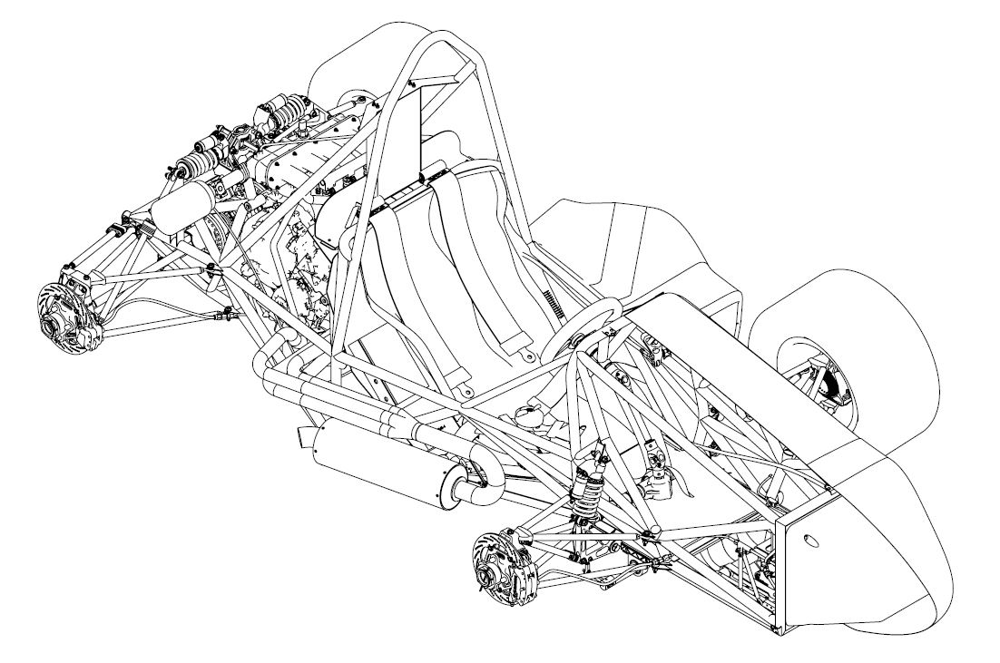
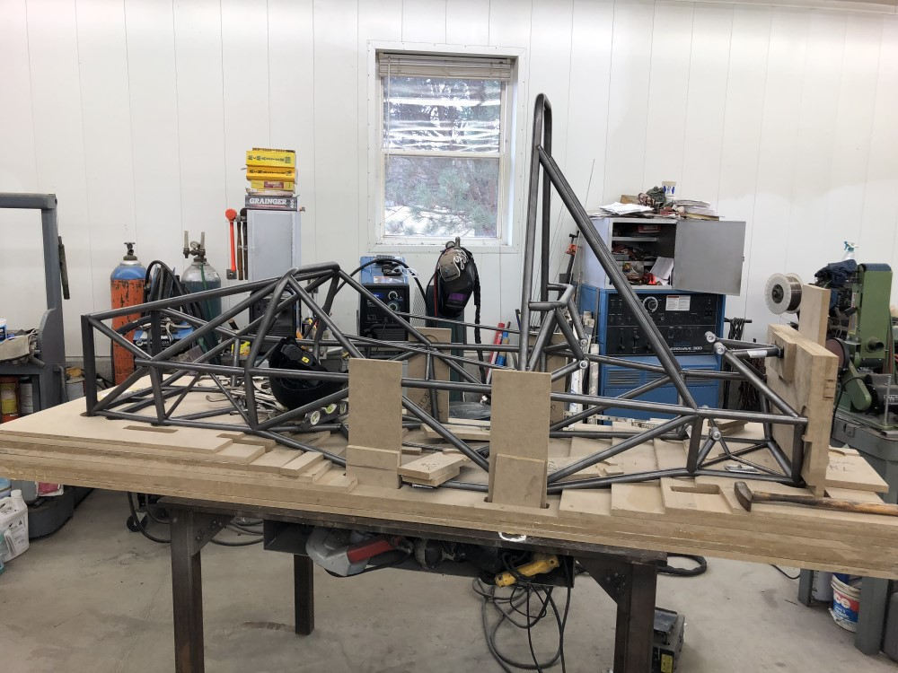

Summary
I am a senior computer science student studying at Washington University in St. Louis, with minors in mechanical engineering and materials science. I am seeking post-graduation employment as a software engineer.
Education
Washington University in St. Louis, McKelvey School of Engineering
Show Classes
B.S. in Computer Science
GPA: 3.61/4.00
Minors: Mechanical Engineering, Materials Science
Expected May 2020
Show Classes
Computer Science Major:
- 131 - Intro to Computer Science
- 132 - Intro to Computer Engineering
- 231 - Intro to Parallel and Concurrent Programming
- 240 - Logic and Discrete Mathematics
- 247 - Data Structures and Algorithms
- 204 - Web Development
- 330 - Rapid Prototype Development and Creative Programming
- 332 - Object-Oriented Development Laboratory
- 417 - Intro to Machine Learning
Mechanical Engineering Minor:
- Computer-Aided Design
- Intro to Electrical Circuits
- Engineering Mechanics I: Statics
- Engineering Mechanics II: Dynamics
- Engineering Mechanics III: Deformable Mechanics
- Thermodynamics
- Fluid Mechanics
Materials Science Minor:
- General Chemistry I
- Materials Science
- Mechanics and Materials Science Laboratory
- Intro to Quantum Physics
Experience
Washington University Formula SAE Team
9/2016 to Present
Chassis and Ergonomics Lead (2017), Suspension Team Member (2016)
Leadership Achievements:
- Managed the timelines and technical aspects of our vehicle’s virtual and physical builds, including coordinating the work of eight system leads and over 30 other team members
- Led a recruitment program consisting of increased advertising across campus, attendance at WashU’s activity fairs, and a team-led workshop to aid in new member placement, significantly increasing member turnout and retention
- Streamlined our documentation processes to increase the quality of work shown to judges at the competition design event, resulting in the team’s highest-ever design score (up 29 places over the previous year – a 25% improvement)
Technical Achievements:
- Developed the WashU Racing website at sae.wustl.edu, improving the sponsor outreach capabilities of the team
- Assisted the transition to 10” wheels, carbon-fiber suspension linkages and new data acquisition systems, culminating in a 20% reduction in average lap time at the competition endurance event
- Designed and fabricated fully-adjustable pedals to accommodate a wider range of drivers and reduce driver fatigue
- Designed and fabricated a custom carbon-fiber seat using a 3D driver model for precise contouring, resulting in improved driver comfort and a reduction in weight of over 50% compared to the previous year’s seat
- Designed and installed a hard-line braking system; optimized brake bias using pressure sensors for car stability
- Designed and fabricated the vehicle frame with optimized geometry, improving torsional stiffness by over 58% and allowing for the addition of adjustable anti-roll bars that decreased skidpad lap times by 15%


- Managed the technical aspect of our vehicle’s virtual and physical builds, including coordinating the work of eight system leads and over 30 other team members
- Applied the stiffness optimization software discussed below in designing the 2019 frame
- Created Gantt charts to outline the design, manufacturing, and assembly cycles of the vehicle
- Assisted overhaul of existing data acquisition and telemetry systems to incorporate strain gauges and a web interface for displaying critical system information
- Improved frame geometry to more comfortably seat the driver and increase engine serviceability
- Fully re-designed the pedals, seat and shifter handle, improving driver control versus the 2017 car
- Helped design and install a hard-line braking system; optimized brake bias using pressure sensors
- Developed Solidworks modeling skills
- Helped design and fabricate suspension bell cranks
- Developed a genetic algorithm to optimize torsional stiffness w.r.t. weight using direct stiffness method
- Designed and fabricated a torsional stiffness testing apparatus to validate the simulation’s predictions
- Parallelized the algorithm for efficiency and developed a web GUI for the software using Python and the Django framework
- Helped students program Arduinos to interface with hardware components and develop an understanding of computer architecture, protocol design and data representation
Skills
Fluency:
Proficiency:
Other Work Experience
Sales Associate - Sherwin-Williams Paint Co.
6/2017 to 2/2018
- Tinted paint per customer orders, stocked products and made sales phone calls to contractors
- Received Employee of the Month in December 2017
6/2017 to 8/2017
- Assembled, cooked and delivered pizzas for customers
9/2015 to 4/2016
- Responded to patient requests ranging from ordering their food to notifying nurses of any emergencies
- Staffed the telephone and desk area while nurses were busy
6/2014 to 8/2016
- Checked customers out on the POS system and stocked/faced product
- Performed various janitorial duties such as wiping tables and retrieving carts